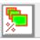
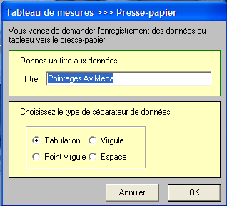

Lycée Taiarapu Nui
Terminale Générale
Spécialité Physique – Chimie
2020-2021
Terminale Générale
Spécialité Physique – Chimie
2020-2021
Act.2 Décrire le mouvement
Réaliser et/ou exploiter une vidéo ou une chronophotographie pour déterminer les coordonnées du vecteur position en fonction du temps et en déduire les coordonnées approchées ou les représentations des vecteurs vitesse et accélération.
Capacités expérimentales :
- Mettre en œuvre un dispositif d’acquisition et de traitement de données :
microcontrôleur, interface d’acquisition,tableur, langage de programmation - Collecter des données sur un mouvement (vidéo, chronophotographie, etc.).
Utilisation du matériel informatique :
Vérifier que l’ordinateur fonctionne bien.Tout problème doit-être signalé (chargeur manquant, touche abimée, fond d’écran inadéquat, etc…) et consigné dans le cahier. Chaque ordinateur à un n° de poste et fait partie d’un lot. Lorsque vous prenez un ordinateur, vous devez vous inscrire sur le cahier en précisant votre nom et prénom et le n° du poste.
1. Réaliser une vidéo
Conditions pour réaliser une vidéo : éclairage suffisant, la caméra doit être fixe, un étalon doit être présent pour pouvoir faire une exploitation de la vidéo.
Matériel :
- Caméra ou webcam
- Ordinateur
- Objet à étudier (balle)
Protocole :
- Réaliser une vidéo permettant une exploitation à l’ordinateur.
2. Exploiter une vidéo
2.1. Vecteur position
Document 1 – Le vecteur position
Dans un repère \( (O,\vec{i}, \vec{j}, \vec{k} \), la position d’un point G peut être déterminée par la connaissance du vecteur position \( \overrightarrow{OG} \).
Ce vecteur a pour caractéristiques : direction la droite \( (OG) \), le sens de O vers G, et la norme : la distance OG.
Le vecteur position varie en fonction du temps, on le note \( \overrightarrow{OG}(t) \). Les coordonnées de ce vecteur varient elles aussi en fonction du temps, le vecteur position peut donc s’écrire : \[ \overrightarrow{OG}(t)=x_{G}(t) \vec{i} + y_{G}(t) \vec{j} + z_{G}(t) \vec{k} \]
Dans un repère \( (O,\vec{i}, \vec{j}, \vec{k} \), la position d’un point G peut être déterminée par la connaissance du vecteur position \( \overrightarrow{OG} \).
Ce vecteur a pour caractéristiques : direction la droite \( (OG) \), le sens de O vers G, et la norme : la distance OG.
Le vecteur position varie en fonction du temps, on le note \( \overrightarrow{OG}(t) \). Les coordonnées de ce vecteur varient elles aussi en fonction du temps, le vecteur position peut donc s’écrire : \[ \overrightarrow{OG}(t)=x_{G}(t) \vec{i} + y_{G}(t) \vec{j} + z_{G}(t) \vec{k} \]
Pour étudier le mouvement il faut faire un pointage de la position du
système étudié image par image.
L’étalonnage préalable permettra d’obtenir les positions réelles. Ensuite un tableur (intégré ou non) permettra d’effectuer des calculs de modélisation pour obtenir les coordonnées du vecteur position en fonction du temps.
Dans la suite vous étudierez la trajectoire du point ……………. de la vidéo …………………. en plaçant l’origine des axes à la position …………………….
L’étalonnage préalable permettra d’obtenir les positions réelles. Ensuite un tableur (intégré ou non) permettra d’effectuer des calculs de modélisation pour obtenir les coordonnées du vecteur position en fonction du temps.
Dans la suite vous étudierez la trajectoire du point ……………. de la vidéo …………………. en plaçant l’origine des axes à la position …………………….
Le pointage :
- Ouvrir la vidéo dans le logiciel AVIMECA 2-7
- Adapter la taille du clip à l’écran 
- Réaliser l’étalonnage de la vidéo en suivant
les consignes de la notice.
